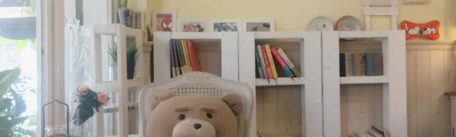

一般人の人生を聞く部屋
一般人の人生を聞く部屋では、「全ての人の人生はストーリーである」をコンセプトに、毎回幅広いゲストを迎えてその方の人生を伺います。 価値観やキャリア構築など、自分自身と重ね合わせながらゲストのストーリーをお楽しみください。
- 毎週 月・水曜日21：00〜22：00 ZOOMにて配信しています。
- 会場はカメラオフですので、お気軽にお越しください。また、ゲストへの事前質問も受け付けています。
- ゲストの情報はInstagramまたはTwitterでご確認ください
ーゲスト募集ー
一般人の人生を聞く部屋にご出演いただけるゲストさんを募集しています！ 語れるものがない・・・という方も大丈夫、 モデレーターと長電話をするイメージでご参加いただけます（中には就活相談・人生相談の会になることもありました！）。 ご希望に応じて他己分析のフィードバックを行っています。就活の面接対策などにもご活用ください。